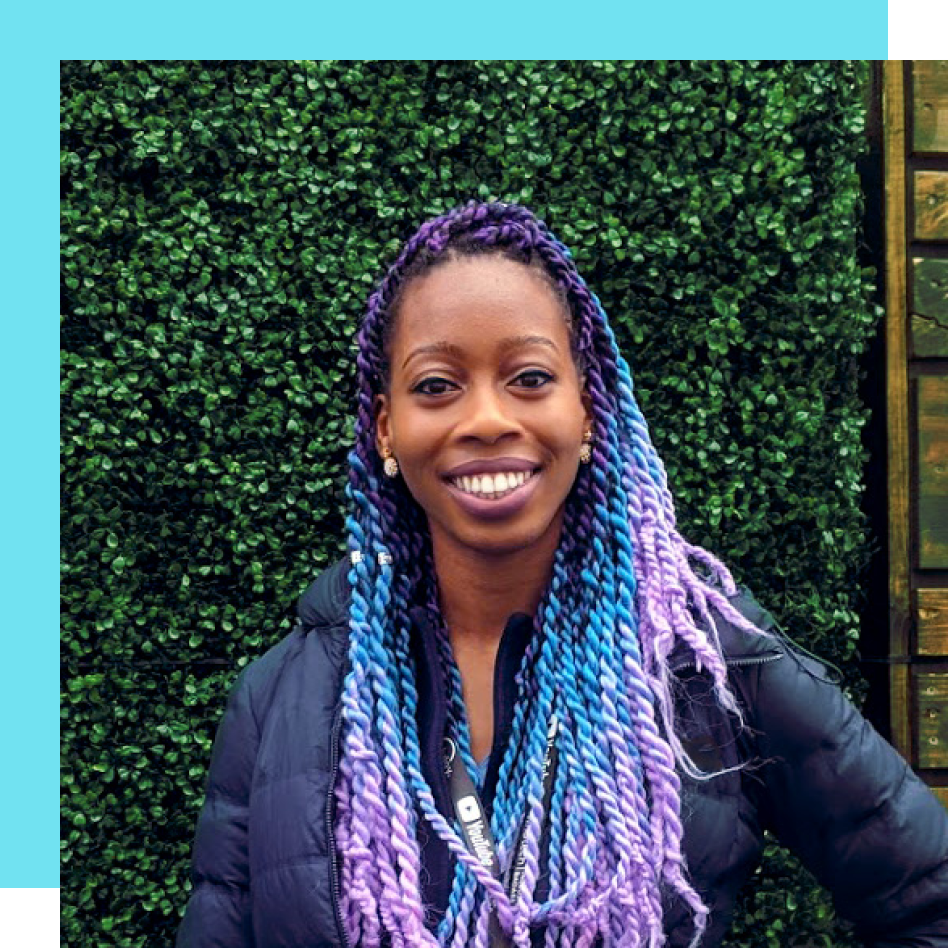
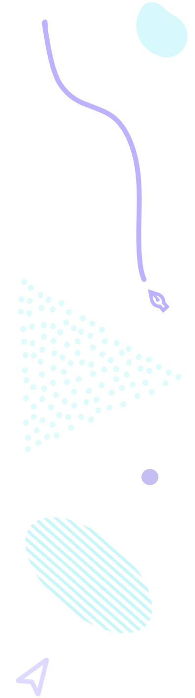
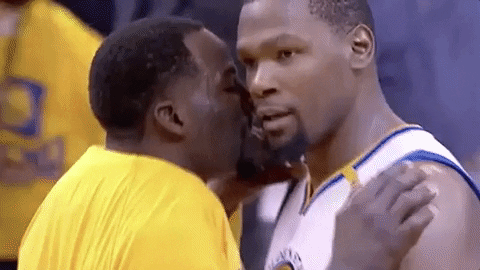

hi, i'm uche!
SO, WHO ARE YOU?
I’m a user experience designer who loves crafting delightful and memorable experiences for On second thought, maybe not just humans... people*
.
When I'm not designing, I'm catching up on shows such as The Americans, The Leftovers, and The OA. Or I'm surfing the web to add new memes and gifs to my collection.
I also recently got into Procreate® so I've been busy polishing up my digital illustration skills.



SO HOW'D YOU GET INTO DESIGN?
AS A YOUNG YOUNGSTER, my intro to design was at a time when dial up connection reigned supreme. As a kid I would spend hours on the family Gateway computer on a little-known site called Neopets, a virtual pet community. I fell in love with creating online clubs, known as guilds (sort of like an online club with its own homepage).
I would constantly iterate on my “designs” for my guilds homepage.
I would spend hours

Throwback to 10-year old me working on MS Paint designs
in classic MS Paint coming up with designs to entice new members. I didn’t know it at the time, but that was when I first started dabbling in design (and community building).
AS A GROWN ADULT, my love of art and animation eventually led to me San Francisco where I joined a startup as the community manager. As an avid anime and manga lover, I jumped at the opportunity to serve as a community manager at an international startup to a large group of people passionate about translating manga.
I worked to bridge the gap between contentcreators, publishers, and fans. I oversaw alluser acquisition and retention efforts, managinga global community of multilingual users.
My team was global as well: I worked with our Japanese content acquisition team to pinpoint the content that our community was interested in and collaborated with our French development team to inform product initiatives that would speak to those interests.
I was the voice of the community

Users letting me know their thoughts on our product
, advocating their wants, frustrations and expectations. Users were at the center of my work, and I worked to help stakeholders strike a balance between satisfying user needs and business goals with finite development resources.
Today, the focus is still on that. UX design is that sweet spot between design, marketing, and user advocacyto me. If you want to learn more, don’t hesitate to reach out!